How-to build composite bot responses with the Common Response component
Tutorial by Frank Nimphius, Oracle
March 2019, Oracle Digital Assistant version 19.1.3
Before You Begin
Background
Skills in Oracle Digital Assistant use components to render bot responses and to prompts users. The System.CommonResponse component allows bot designers to create a set of user interfaces that range from simple text boxes to lists and card layouts to composite responses that include rich media and images. In this tutorial you learn how to build user interfaces with the System.CommonResponse component that display data from context variables in a dialog flow and that update context variables with the user provided selection or user typed text. As a follow-up to the "Using Composite Bag Entities for Real-World Entity Extraction" tutorial released earlier, you learn how to use the System.CommonResponse component to render and prompt for content of a composite bag entity.
What you need
You need Oracle Digital Assistant version 19.1.3 or later to follow the hands-on instructions in this tutorial. Oracle Digital Assistant is available as a paid- and in a trial subscription. If you don't have access to Oracle Digital Assistant yet, visit the Oracle Digital Assistant website
Download the Oracle Digital Assistant starter skill bot from here: CRCTutorialSkill (zip)
Getting Ready
The use case for this hands-on tutorial is a pizza bot that handles orders for pizza and pasta. For you to be able to focus on building bot responses with the Common Response component, the starter skillbot you downloaded contains pre-defined intents and entities.
Importing the starter skill bot
Open the Oracle Digital Assistant home dashboard by pointing your browser to <your instance url>/botsui
Select the menu icon located at the top of the page next to the "Oracle Digital Asisstant" label ()
Select the Skills option from the "Development" category
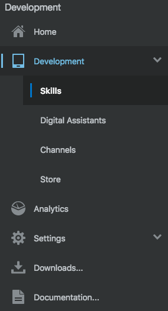
Select the menu icon from the top of the page to close the menu()
Click the Import Skills button located on the top right ()
On your computer, browse to the location that you saved the dowloaded CRCTutorialSkill(1.0).zip to
Select the CRCTutorialSkill(1.0).zip file and click Open to upload and install the starter skill bot
Locate the CRC Tutorial Skill and open it by clicking on the CRC Tutorial Skill tile
Note: If you cannot find the CRC Tutorial Skill starter skill, then try and use the filter field above the "New Skill" tile.
Exploring the starter skill bot
If not open already, open the intent builder by selecting the Intents menu icon ()
There are two intents created for you. The Welcome intent allows users who are not familiar with how to use the bot to be directed to a menu state. The OrderPizza state resolves pizza orders from free input text messages using naural language processing (NLP). For this, the intent has two entities associated with it: PizzaType and PizzaSize. Note that both intents have example utterances defined, which allow you to train the model and, if required, fine tune the bot's understanding.
Before you can try the intent model and its natural language processing, you need to train the skillbot. For this, click the Train link on the upper right ()
In the opened dialog, keep the default settings and press the Submitbutton. Training the model may take a second or two.
Now you are ready for testing the intent model. For this, click the Try It Out! link in the upper right corner to test the intent model
Type I like to order a large pizza pepperoni into the Message and press the Send key.
Notice that the intent tester indicates the OrderPizza intent with a probabily of 100% and that bot entities could be exracted from the input message.
Press the Reset botton in the header of the tester and type Gimme a pizza supreme. Again notice the returned confidence level for the PizzaOrder intent. This time however only one of the two entities could be extracted from the input message. So for this user message, the bot conversation flow would need to ask for the pizza size to order.
Close the intent tester by clicking the close button ()
Select the entity icon from the menu ()
Notice the pre-defined entities for size, crust, toppings etc. that each describe an item in a pizza order. The Pizza entity is a composite bag entity that groups individual entities to a logical until, like a business domain object. The composite bag entity is used in the advanced section of this tutorial.
Next, open the dialog flow editor (). As you can see, an intent state and a state to handle unresolved intents has been created for you already. Now its up to you to complete the pizza order dialog flow.
Building a Simple Text Prompt
Starting simple, in the hands-on instructions in this section your are creating a text input field to take the order for a pizza. In a second field you are then asking for information about the pizza size
Creating the orderPizza state
In the dialog flow editor, press the green + Component button on top () of the editor
In the opened dialog, select the User Interface tile ()
In the User Interface dialog, select the Common response - text template link.
Ensure the Insert After select list is set to unresolved, so that the new component state gets added to the end of the file
Switch the Remove Comments toggle to on.
Click Apply
Change the name of the added dialog flow state from textResponse to orderPizza
Change the orderPizza state so it looks like shown in the image below.
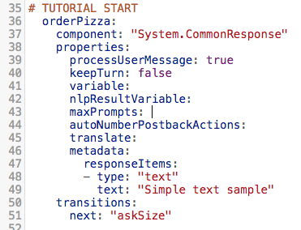
Next, edit component properties shown in the table below. Make sure you add the values including the surrounding double quotes.
Property
Value
variable
"pizzaType"
nlpResultVariable
"iResult"
text
"What pizza type do you like?"
Creating the askSize state
again, press the green + Component button on top () of the dialog flow editor
In the opened dialog, select the User Interface tile ()
In the User Interface dialog, select the Common response - text template link.
Ensure the Insert After select list is set to orderPizza, so that the new component state gets added to the end of the file
Ensure the Remove Comments toggle is switched on.
Click Apply
Change the name of the added dialog flow state from textResponse to askSize
Change the askSize state so it looks like shown in the image below.
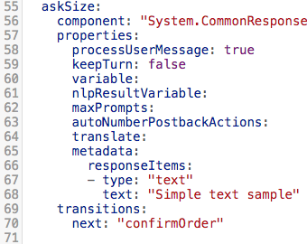
Next, edit component properties shown in the table below. Make sure you add the values including the surrounding double quotes.
Property
Value
variable
"pizzaSize"
nlpResultVariable
"iResult"
text
"What size of pizza would you like?"
Creating the confirmOrder state
One last time (at least for now), press the green + Component button on top () of the dialog flow editor
In the opened dialog, select the User Interface tile ()
In the User Interface dialog, select the Output template link.
Ensure the Insert After select list is set to askSize, so that the new component state gets added to the end of the file
Ensure the Remove Comments toggle is switched on.
Click Apply
Change the state name from output to confirmOrder
Add the following string to the text property (including the quotes):
"Your order of a ${pizzaSize.value?lower_case} ${pizzaType.value?capitalize} pizza is on its way"
Add a transitions element as shown in the image below.
What you just did: In this section you actually created a complete bot conversation flow using to Common Response component states and one output component state. Using the transitions directives you specified the states to navigate to once a valid data input is provided for one of the two input states. The confirmOrder state actually ends with a return transition, which basically means that the user-bot conversation is ended.
Note:The confirmation message contains two Apache FreeMarker expressions "?lower_case" and "?capitalize". Apache Freemarker is an open source template language that can be used in Oracle Digital Assistant to e.g. format text messages. In this pizza example, the message values for pizza type and size are read from the entity. The pizza type value is defined in all upper case in the entity, while the pizza size is defined with a capitalized first letter. Both entity values actually look odd when displayed to a user in a message. Using Apache Freemarker, the entity values are formatted such that the pizza type starts with an uppercase letter, followed by all lowercase letters, and the pizza size is printed in all lowercase.
Testing
Before you can test the bot, ensue your edits are valid and well formatted. For this, press the Validate link on top of the dialog flow editor. (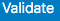)
Note: If you see any validation error, you can hover the mouse over the red error marker on the left margin to learn about the issue. Most likely you got the indenting of elements wrong. The dialog flow editor requires each indenting to be exactly two blanks. So counting from the left margin, the first two blanks point to the state name, the next two blanks (blanks 3 and 4)then point to the component, properties and transitions elements. The next 2 indents then point to child elements of the prperties and the transitions elements.
For testing the conversation flow, press the embedded conversation tester icon () in the menu bar to the left.
In the Message field type I like to order pizza and press the enter-key on your keyboard
When prompted for specifying a pizza type, enter pepperoni into the Message field and press the enter-key
When prompted to enter a pizza size, type large into the message field and press the enter-key on your keyboard
You should see a confirmation message Confirming your order of a large Pepperoni pizza acknowledging the ordered pizza
Click the "Reset" link on the top right of the embedded tester
Then, close the embedded conversation tester by clicking the 'X' on the upper right ()
Building a List-Of-Values
While your pizza bot is working, the user experience can be improved. Instead of displaying prompts for the user to provide the pizza type and pizza size values, displaying a list of values makes for a much better user experince. Using the System.CommonResponse component, building list of values is easy.
Displaying a list-of-values response for the orderPizza state
There are two options you have to create a list of values for the orderPizza and the askSize states: re-create or modify. To experience both approaches, you will
Create a list of values for the orderPizza state by re-building the state using the component templates option in the dialog flow editor
Modify the askSize state definition to extend the current text response with a choice of values
Back in the dialog flow editor, press the components template button ()
In the opened dialog, select the User Interface option ()
Select the Common response - text link
Set the Insert After select field to orderPizza
Ensure the Remove Comments toggle is switched on
Press the Apply button
Delete the orderPizza state so that the textResponse state shows directly beneath the # TUTORIAL START comment, as shown in the image below:
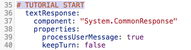
Rename the textResponse state name to orderPizza
Set the variable property to "pizzaType"
Set the nlpResultVariable property to "iResult"
Remove the autoNumberPostbackActions and translate properties
The responseItems element contains two text responses. Remove the first text response by deleting the block of code that is highlighted in the image below.
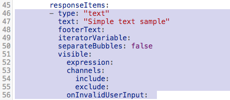
Edit the remaining text response item to look as shown in the image below
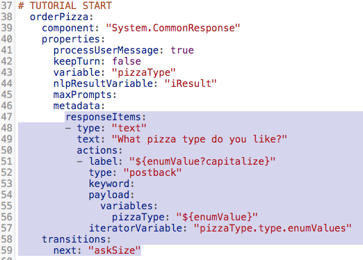
Click the Validate link on top of the dialog flow editor. If there are any formatting errors, fix them before you progress
What you just did: Using the System.CommonResponsecomponent, a list of values is created by adding action items to a text response. The following table explains the properties you set and what their values actually do.
Property
Value
iteratorVariable
Action items can be stamped from an iterator. The PizzaType entoty is a value list entity, which means that a list of values can be accessed through the pizzaTypeentity type context variable
label
When data is read from a entity list, then the current stamped item is accssed through ${enumValue}. Because the entity value for pizza type is all upperase, an Apache FreeMarker expression ?capitalize is used to create a user-friendly message format
variables
Postback actions can update one or many variables when a user select a list item. In the pizza bot example there is only one context variable pizzaType that needs to be updated. The string pizzaType: "${enumValue}" assigns the current iterator value to the context variable. So when a user e.g. selects the "Pepperoni" list item, a value of PEPPERONI is saved in the context variable.
Testing
Before building the list-of-values for the askSize state, lets have a quick test of the pizza type list-of-values.
Open the embedded conversation tester ()
If needed, click the Reset link located in the header ()
In the Message field, type "I like to order pizza"
As a result you should see the following list response:
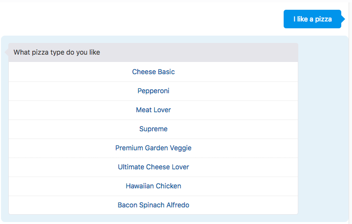
Select a pizza from the list, e.g. Meat Lover
When prompted for a pizza size, typelarge and press the enter-key
You should see a confirmation message containing the selected pizza type and pizza size you entered
Reset the conversation in the conversation tester
Close the tester window by clicking on the 'X' icon
Displaying a list-of-values response for the askSize state
The askSize state currently renders as a prompt response. In this section you are extending the prompt response to show a list-of-values instead.
If not still open, open the dialog flow editor and navigate to the askSize state
Edit the askSize state so it looks like in the image below. The changes you need to apply are highlighted in the image
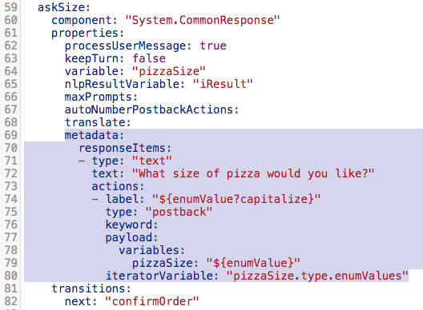
Press the Validate button to ensure correct indenting of the added configuration.
Note If you experience an error you don't see how to resolve, try the debugger ()
What you just did: You extended the System.CommonResponse component in the askSize state with actions. Because the PizzaSize entity too is a value list entity, you could read the list of values from the entity type context variable (pizzaSize.type.enumValues)
Testing
Open the embedded conversation tester ()
In the Message field, type "I like to order pizza"
Select a pizza type from the displayed list, e.g. Meat Lover
You are then prompted for selecting a pizza size. So select one of the values from the list
You should see a confirmation message containing the selected pizza type and pizza size
Reset the conversation in the conversation tester
In the Message field, type "I like to order pizza with pepperoni"
Note: You are prompted for selecting a pizza size instead of selecting a pizza type first. The reason for the pizza type menu not displaying is that the information is extracted from the user message using NLP. This actually works because of he nlpResultVariable property of the System.CommonResponse component that you set to "iResult", which is a context variable of type "nlpresult" that is filled by the System.Intent component with entity values found in the user message.
Instead of selecting a pizza size, type"Hmm, I like a large pizza". You should see a response similar to the response shown in the image below:
Note:The variable property of the System.CommonResponse component of the askSize state references a context variable of type "PizzaSize". So any value that you provide when prompted for a pizza size is validated against the entity. The text message you provided when asked for the pizza size actually contaned a valid size and thus the value got extracted.
Reset the conversation in the conversation tester
As a last test, type "I like to order a pizza" into the message field and press the enter-key
When prompted for selecting a pizza, type"salad" Note: Again, the provided value is validate against the list of pizzas in the entity. Since salad is not a valid entity type, the list of pizza is displayed again.
Reset the conversation in the conversation tester
Close the tester window by clicking on the 'X' icon
Using keywords to access list items
Both states, the orderPizza and the askSize states have a list of actions with an yet empty keyword property. Keywords allow you to define shortcuts that users can type into the message field to select an action (a list item). You can define a single word as a value, or a sequence of words concatenated with a comma. E.g. keyword: "l,L,grand,max" to provide a list of options for selecting a large size for a pizza.
However in this tutorial, the list of values is dynamically created from the list of values provided by the PizzaType and PizzaSize entities. This means that keywors also need to be generated dynamically. Let's create keywords for the askSize state
The askSize state should now look like shown in the image below
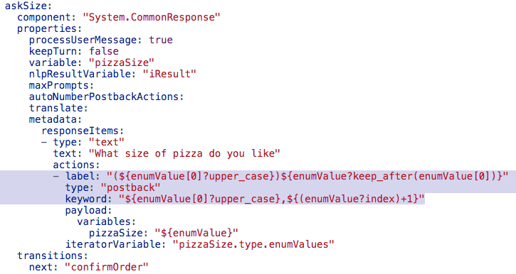
Click the Validate button to ensure correct formatting and indenting
What you just did: In this part of the tutorial, you define keywords for the value list of the askSize state. Because the value list is generated dynamically, you used Apache Freemarker expressions to define keywords as "L" or "l", as well as a numeric value, which matches the position of the item in the list (e.g. 1 for "Large", 2 for "Medium")
Testing
Open the embedded conversation tester
In the Message field, type "I like to order pizza"
Select a pizza type from the displayed list, e.g. Meat Lover
You are prompted for selecting a pizza size. Notice the different look of the list labels
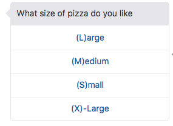
Instead of selecting a value from the list, type e.g. L and press enter. You should see a confirmation for a large pizza "Meat Lover"
Reset the converation
In the Message field, type "I like to order pizza"
Select a pizza type from the displayed list
When asked for a size, type the numeric value 2. You should see a message confirming that you ordered a medium size pizza
Reset and close the embedded conversation tester
On your own: Now that you added keyword support for the askSize state, do the same for the orderPizza state.
Creating a Card Layout
Some messengers, like Facebook and the Oracle Digital Assistant Client SDK for JavaScript, suport rich user interface layouts. A common layout type is the card layout, which when aligned horizontal displays as a carousel. Next you will change the orderPizza state to render pizza types in cards with images.
Displaying the pizza menu as cards
Create a new line under the states: element in the dialog flow
Paste the content into the dialog flow and align it so it looks like shown in the image below.
Note: each indent is exactly two blank characters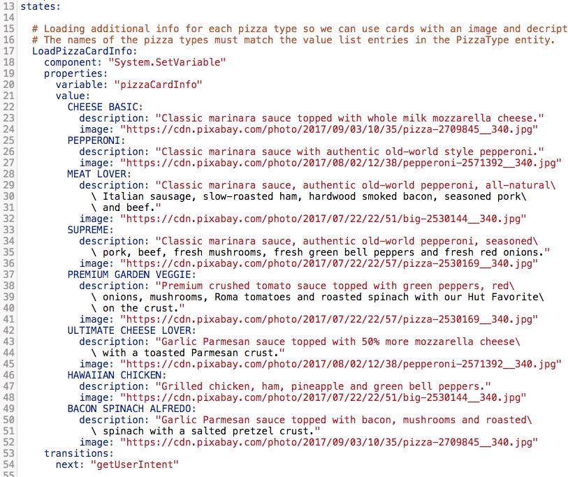
When done, press the Validate button to ensure your dialog flow is well formatted after adding the code from the file.
Delete the orderPizza state
Place the mouse cursor under the # TUTORIAL START comment
Scroll to he top of the dialog flow builder and click the + Components button ()
In the component template dialog, select User Interface and then Common response - card
Set the Insert After list value to unresolved
Ensure the Remove Comments toggle is enabled abd press apply
Rename the cardResponse state name to orderPizza
This tutorial does not need all of the System.CommonResponse component properties. Change the orderPizza state so it looks as shown in the image below .
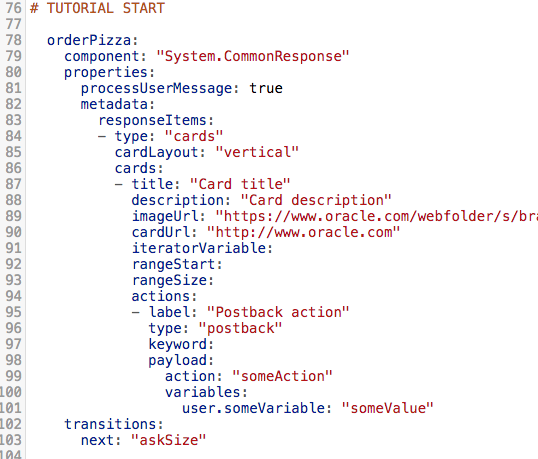
Press the Validate button to ensure the component state to be valid
Further edit the pizzaOrder state with instructions and values from the table below
Property
Value
Action
variable
Create variable property in a new row below the processuserMessage property
variable
"pizzaType"
nlpResultVariable
Create property in a new row below the variable property
nlpResultVariable
"iResult"
cardLayout
"horizontal"
iteratorVariable
"pizzaType.type.enumValues"
title
${enumValue}
description
"${pizzaCardInfo.value[enumValue].description}"
imageUrl
"${pizzaCardInfo.value[enumValue].image}"
cardUrl
Delete property
payLoad:>action:
"selectPizza"
label
"Order ${enumValue?capitalize}"
user.someVariable
Change name to pizzaType
pizzaType
"${enumValue}"
The orderPizza state should now look as shown in the image below
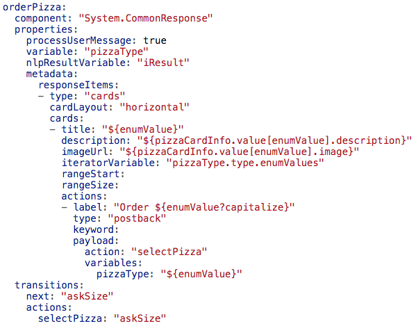
Edit the transitions: element so it looks as shown in the image below
With all these changes, the orderPizza state should now look like shown in the image below
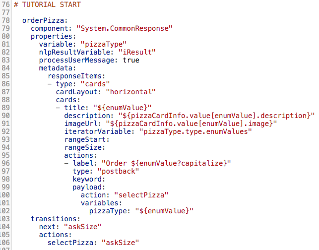
Press the Validate button to ensure all formatting and indenting is still valid.
What you just did: In this section, you did change the bot response rendered by the System.CommonResponse component from a list layout to a card layout.
The LoadPizzaCardInfo state you copied from the provided pizza_menu.txt file uses Apache FreeMarker expressions to build a pizza menu object. In a production usecase, this object would be queried from a remote service by a custom component and then saved into a context variable.
As before, the card layout uses an iterator (the enum values of the PizzaType entity) to print the individual cards. The pizza names are used as a key name in the pizza menu object (pizzaCardInfo) to retrieve the image URL and description.
The actions element defines the buttons to be placed on a card. In the tutorial, each card is rendered with a single button to order the displayed pizza. Pressing the button updates the pizzaType variable with the name of the pizza. At the same time, the selectPizza custom action is followed. The selectPizza custom action is mapped to the askSize state, so navigation continues to asking for the pizza size.
Why the next transition is set to the same value as the selectPizza transition: The selectPizza action transition is followed when a user clicks the button on a card. However, if the initial user message contained the name of the pizza to order, in which case natural language processing extracts it, then the next transition is followed. Keep in mind that selecting a button may result in a diferent dialog flow, which is why it is good to define a separate action transition.
Testing
Open the embedded tester ()
Reset the conversation if needed
TypeHi into the Message field and press the enter key
Use the avigation arrow displayed on the right side of the card to navigate to the second pizza
Press the order button
Select a pizza size. You should see a conversation history similar to the one shown in the image below
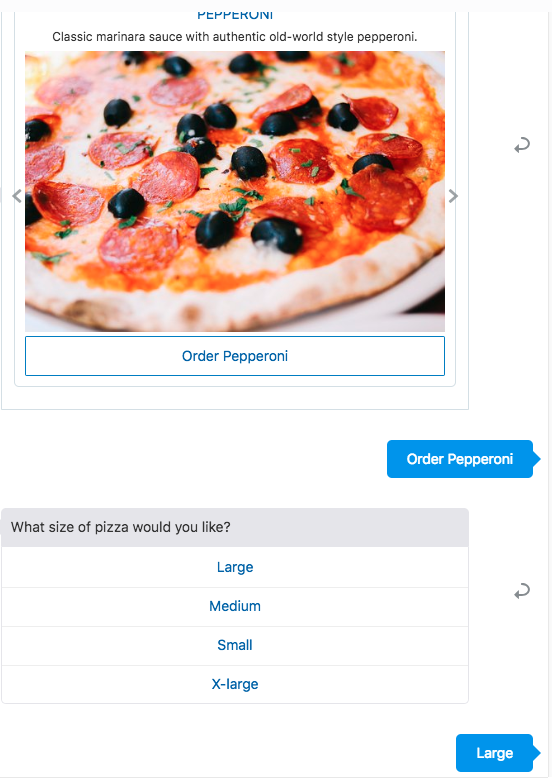
Reset the conversation ()
Type I like to order a pepperoni pizza into the Message field and press the enter key
Notice that the card layout with the pizzas does not show and you are directly asked to select a pizza size. This is because of the variable and nlpResultVariable properties you set on the System.CommonResponse component
Adding keyword support for cards
When working with card layouts, it is not the card you select for an action, but one of the buttons on the card. In this tutorial, each card has a single button to select a pizza type for ordering. Following the next steps, you will implement keyword support for the orderPizza state's card layout.
Replace the label property value in the orderPizza state with the following expression
"Order (${enumValue[0]?upper_case}${enumValue[1]?upper_case})${enumValue?keep_after(enumValue[1])}"
Edit the keyword: element in the actions element, adding the following expression string as a value
"${enumValue[0]?upper_case}${enumValue[1]?upper_case}"
Open the embedded tester
Type I like to order pizza into the message field and press the enter-key. The pizza menu should display as shown in the image below.
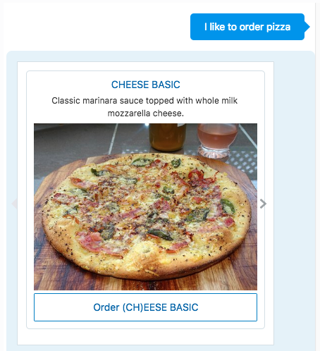
Note the (CH) in the "Order (CH)EESE BASIC" card button label
Type ch into the message field to order a cheese pizza
Press the enter-key
Select large as the pizza size when prompted for it. The bot should confirm your order of a large cheese pizza
Reset the tester
Type I like to order pizza into the message field and press the enter-key
With the CHEESE BASIC pizza card displayed, type pe into the message field and press the enter-key
Type l into the message field when asked for the pizza size and press the enter-key. The bot should confirm your order of a large pizza Pepperoni
Reset and close the tester
Note: There are two observations with this latest practice. Firstly, the keyword uses two letters to make a pizza selection. This is because two pizzas, pepperoni and premium, start with a "P" as the first character. So a single letter keyword does not work. Secondly, the keyword selection does work even if a card is not displayed. There is, however, a constrain to the last statement. If you use page ranging to limit the number of card rendered at a time (some messengers like Facebook require this), then only those cards can be accessed through keywords that are within the current range.
Working with Composite Bag Entities
Composite bag entities are explained in the "Using Composite Bag Entities for Real-World Entity Extraction" tutorial. In the following you learn how to build user interfaces and prompts for content of composite bag entites usin the Sytsem.CommonResponse component.
When working with composite bag entities you have a choice of how to render the user interface
The System.ResolveEntities system component renders user interfaces for composite bag entities as prompts or list-of-values without requiring any programming. Ease of use definitively is the benefit of the System.ResolveEntities component.
The System.CommonResponse component can also render user interfaces for the composite bag entities, but may need additional configuration. The benefit of using the System.CommonResponse component is that the user interface it renders is customizable, as you will experience in this part of the tutorial.
Exploring the composite bag entity
The starter skill for this tutorial provides a Pizza composite bag entity that from here on you will in your pizza bot. Let's explore the Pizza composite bag entity for you to better understand what you are going to do next.
Open the entiy panel ()
Select the Pizza entity
Notice the Bag Items section that contains the following items: Type,Size,Toppings, CheeseType, NoToppings, Location and LocationText.
Each item in the bag is either an entity or a variable. When a composite bag entity gets resolved at runtime, then all bag items are getting resolved at once with no exra dialog flow states to define.
Select the Type entity bag item and click on the pencil icon ()
Scroll down the opened panel and notice the properties you can set. A lot of properties, including prompts, validation rules and range size, which normally are set as property on a component, are configured in the entity and will be picked up by the component at runtime.
Click the Close button in the upper right corner to return to the composite bag entity panel
Preparing the intent resolution
Though this tutorial is all about the common response component, it is important to also ensure enity extraction through natural language processing continues working when using the Pizza composite bag entity.
Select the Intent menu option in the menu to the left ()
Remove the PizzaSize and PizzaType entities from the Intent Entities list by clicking on the 'x' icons
Press the + Entity button
Scroll the opened list of entities down to the Pizza entty and select it. 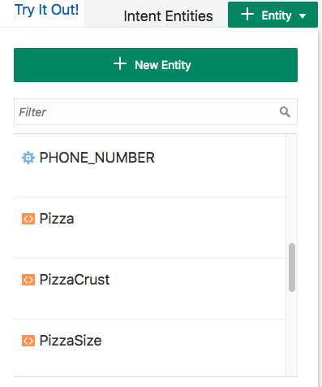
Click the Train button in the header to train the model
Select the Try It Out! link to open the integrated intent tester
Type I like to order a large pizza pepperoni into the Message field and press the Send button
Notice that the PizzaType and PizzaSize entities are resolved within the composite gab entity as well as stand alone.
Close the intent tester by pressing the xlose button ('X')
What you just did:
For natural languages processing to extract entity values from user input messages, you needed to associate the Pizza composite bag entity with the OrderPizza intent. Note that there is no need to associate all the individual entities of a composite bag entity with the intent.
Preparing the dialog flow
Select the dialog flow builder menu item ()
Delete the orderPizza and the askSize states.
What you just did: A composite bag entity doesn't require dialog flow states to be defined for each of its contained entities. The System.CommponResponse component generates all user interaction prompts and lists needed.
Creating the orderPizza state
Still in the dialog flow, press the + Components button ()
Select the User Interface category
Select the Common response - composite bag template
Set the Insert After select list to unresolved.
Enable he Remove Comments toggle.
change the name of the added dialog flow state from resolveCompositeBag to orderPizza.
Remove the following properties that are advanced and that are not discussed in this tutorial:
Properties to delete
maxPrompts
cancelPolicy
transitionAfterMatch
autoNumberPostbackActions
translate
In globalActions, delete the Cancel postback action so the globalActions configuration looks as in the image below
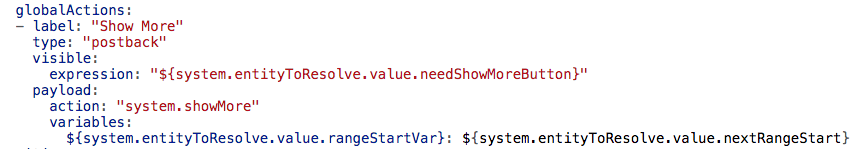
Change the transitions section to look as shown in the image below
Edit the following properties with the values (incuding quotes) shown in the table below
Property
Value
value
pizza
nlpResultVariable
"iResult"
Edit the metadata property so it looks as in the image below. Specifically notice the highlighted change in the action variables.
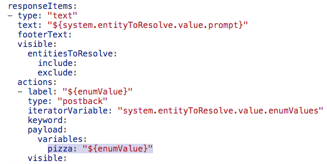
Change the confirmOrder state's text message from ...
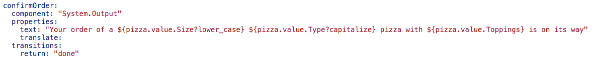
to ...
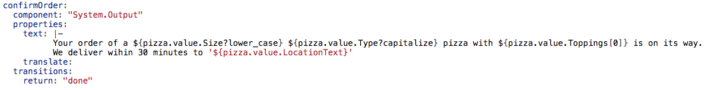 Note: to save you from typing, below is the complete dialog flow state for you to copy-and-paste. Just ensure the formatting to be like in the image above
confirmOrder:
component: "System.Output"
properties:
text: |-
Your order of a ${pizza.value.Size?lower_case} ${pizza.value.Type?capitalize} pizza with ${pizza.value.Toppings[0]} is on its way.
We deliver wihin 30 minutes to '${pizza.value.LocationText}'
translate:
transitions:
return: "done"
What you just did: In this part of the tutorial you did create a dialog flow state that uses the System.CommonResponse component to resolve the Pizza composite bag entity. The component template contains most of the configurations so that the only change required is setting the values for the variable and the nlpResultVariable properties, as well as the change of the name of the variable to update when a user selects an item (a pizza type or pizza size) from the list.
The orderConfirmation state needed to be changed because the user provided order information is saved in the pizza variable and no longer in the variables created for each pizza type.
Testing
Open the embedded conversation tester ()
Reset the conversation tester if required
Type I like to order pizza into the Message field and press the enter-key
In the displayed list of pizzas, select PEPPERONI
You are then prompted for a pizza size. Select Large as the pizza size
When prompted for the toppings, type 2.
When prompted for the delivery address, type Home
.
The confirmation message displayed in the tester should look as shown in the image below:
Reset and close the conversation tester.
Observation to point out: Using the System.CommonResponse component with a composite bag entity does not require bot designers to setup dialo flow states for each entity contained in the composite entity. Instead a single state, orderPizza in this sample, is sufficient.
Adding a card layout to the UI rendered for the composite bag entity
Using the System.CommonResponse component with a composite bag entity allows you to create the same user interface you created before using individual entities. In this part of the hands-on you will copy-and-paste code to the pizzaOrder state that during testing renders pizza types as cards.
Edit the orderPizza state and add an additional card response item. The System.CommonResponse items should look as shown in the image below:
Note: to save you from typing, please find the OBotML code to copy-and-paste into your orderPizza state. Just ensure the formatting is as in above image.
 How-to build composite bot responses with the Common Response component
How-to build composite bot responses with the Common Response component Before You Begin
Before You Begin Getting Ready
Getting Ready )
)  )
) )
)  ). As you can see, an intent state and a state to handle unresolved intents has been created for you already. Now its up to you to complete the pizza order dialog flow.
). As you can see, an intent state and a state to handle unresolved intents has been created for you already. Now its up to you to complete the pizza order dialog flow. Building a Simple Text Prompt
Building a Simple Text Prompt
 ) in the menu bar to the left.
) in the menu bar to the left. Building a List-Of-Values
Building a List-Of-Values )
)  )
)
 Creating a Card Layout
Creating a Card Layout
 Working with Composite Bag Entities
Working with Composite Bag Entities )
)